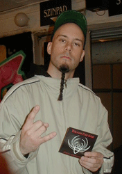

| ||||||||||||||||||||||||||||||||||||||||||||
|
:: CHRISTOFER JOHNSSON :: GUITARS ::
He started to play the bass at the age of 15 and changed to guitar a year later. Therion in one form or another (known earlier as Blitzkrieg, Megatherion and other names) is the main band that has occupied him ever since he started playing, but he also made 3 albums with a weird psycho-metal band called Carbonized as well as some vocal performances in bands, such as the Swiss band Messiah and the Swedish band Liers In Wait.He has no formal music education and has never taken any kind of music lessions. |
:: KRISTIAN NIEMANN :: GUITARS ::

Kristian picked up the guitar at age 17 and soon began playing with local bands. In 1994 he moved to Los Angeles to study jazz at Musicians Institute.While still in the States, he was featured on the JSR Records compilation album "Hottest Unknown Guitarists" that was released in 1996. After returning to Sweden, he taught Metal Guitar at the Stockholm Guitar Academy for a few years, but today he only teaches privately out of his home. He hooked up with Therion through drummer Sami Karppinen, with whom he played in a rock/fusion band. When Tommy Eriksson left the band, Sami recommended his buddy. When not touring or recording wih Therion, KN can be found gigging locally with a slew of different bands in most styles of music, as well as doing some studio/session work. His main influences on the guitar are Allan Holdsworth, Eric Johnson, Greg Howe, Marty Friedman and Shawn Lane. |
|
:: JOHAN NIEMANN :: BASS ::
Influences: Tony Levin, Anthony Jackson, Jimmy Johnson, Andy WestA few favourites: King Crimson, Voivod, Mr. Bungle, Jellyfish, Frank Zappa, Allan Holdsworth, Peter Gabriel, Testament, Slayer. As suggested by a music teacher, Johan began playing bass at age eleven. A few years later, he co-founded the band Mind\'s Eye with whom he recorded two albums. He left the band in may 2000 due to scheduling conflicts with Therion. He also attended the Stockholm Music Conservatory to study music production and sound engineering. Outside of Therion, when time permits, he performs with a wide variety of bands in and around Stockholm. |
:: PETTER KARLSSON :: DRUMS ::
Influences: Frank Zappa, Gentle Giant, Magma, Jethro Tull, U.K., Stevie Wonder,
Return to Forever, Queen, Jesus Christ Superstar, Mercyful Fate,
among others.Petter started playing the drums at the age of nine. Before joining Therion 2004 he played with a number of local constellations. He is familiar with a wide range of genres and has been playing everything from punk to big band jazz. Mostly he is known as a creative and technically melodic heavy metal drummer and picks most of his inspiration from Terry Bozzio, Cristian Vander and Steve Gadd. Petter is also the lead vocalist and guitar player of the metal band Argento. |
|
:: BAND BIOGRAPHY ::
If you wish to see a rather LONG version of Therion biography, please follow this link.
Short version: The band started in 1987 under the name Blitzkrieg, changed name to Therion in 1988 and released some demos and a MLP in 89 before the debut "Of Darkness" was released in 1991. Being known as a creative death metal band, Therion developed over the years (starting with "Beyond Sanctorum" in 1992) to become an avant garde act appreciated by a strong undergound audience. Their third and fourth albums were extremely experimental and there was a change of members in between all albums. The founder of the band, Christofer Johnsson remained the only original member and wrote the majority of the song material. In 1996 their fifth album "Theli" was released and this is usually considered to be the breakthough album of the band. The style on Theli had changed into a symphonic opera metal with all kinds of influences, including 70's progressive rock, 80's heavy metal, oriental music and plenty more. Member problems continued and the follow up "Vovin" (Therion's best selling record with over 125.00 copies sold in Europe) was recorded as Christofer's solo album, but still under the name Therion. This was the first record to include real orchestra and with the records "Deggial" and "Secret of the runes" the band has created a total hybrid between catchy metal music and opera/classic music. Since Deggial the lineup has been stable except for drummers. In 2002 the band celebrated their 15 year anniversary by releasing the double live CD "Live in Midgard". On the lastest twin albums "Sirius B" and "Lemuria" the band has taken this concept even futher and 171 musicians and singers in total were involved in creating these ultimate progressions of symphonic music. The band is considered to be main responsible for the big trend of symphonic bands popping up in the 90's where female singers and keyboards have become rule rather than exception and where those bands who can afford it now feel a need to use orchestra on their records. |
|
Therion Society is the Official Therion Fanclub. To find out more about what you get as a member and how to join:
Click here
Enter a nick and join the official Therion IRC channel There are 13 people in the chat Just add this link to your favourite RSS reader to be the first to know about new Therion news newsrss.rss2 | ||||||||||||||||||||||
 |
||
| Latest news :: Official Forum :: Band related :: Discography :: A/V & much more :: F.A.Q. :: Contact info | |||
|